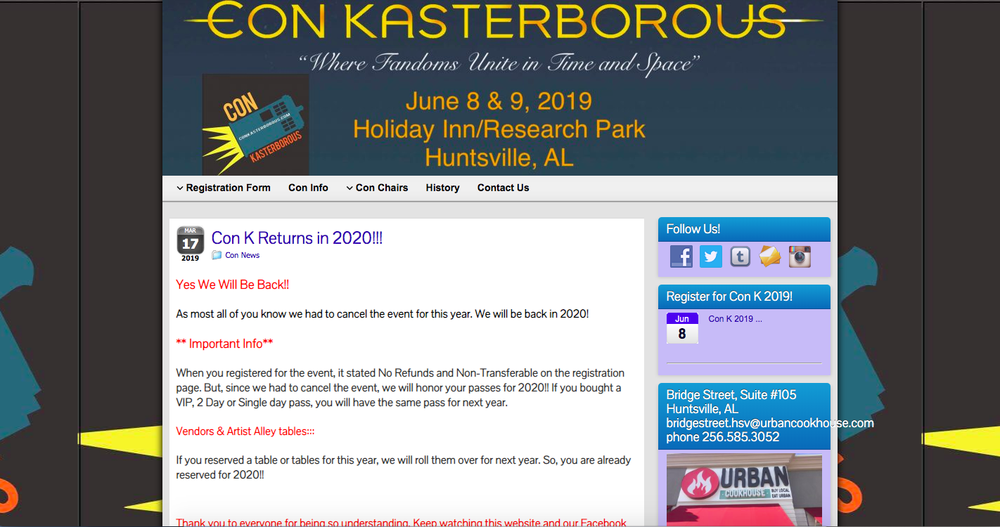
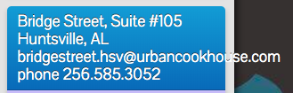
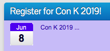
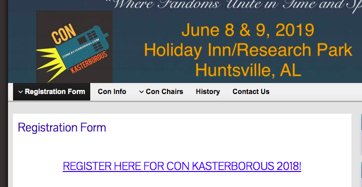
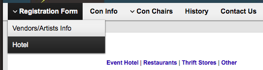

I’m a nerd 🤓 and I love the TV show Doctor Who. My favorite Doctor Who convention is called Con
Kasterborous and it’s held in Huntsville, Alabama. I’ve been 7 times, but this year it got cancelled
:( so I didn’t get to go. I decided to do a fun project to help me keep me from being bummed about
it. I have no affiliation with Con Kasterborous and this is just a personal project.
I naturally gravitate toward the research side of UX (I have a degree in anthropology) and I could
use more UI design practice, so this is mainly focused on visual design and there wasn’t as
much research or testing involved as I would have done if I wanted to work on the whole UX process.
The convention has a website (conkasterborous.com)
with lots of information on it, but as a user of the site I noticed a few things that could be improved.

There are some general issues with the site that are pretty easy to fix, like an email address that
doesn't wrap inside of the box it's in. Fixing some of these things will make the site look better and
add some trustworthiness to it, which is always helpful when you're trying to get someone to pay you
money.

Registration Confusion
Right now the site has some confusing aspects specifically because it was cancelled after it had
been planned. The top banner (that shows up on every page) still has the dates it was originally
scheduled for, and there’s a sidebar section that talks about registering for this year.

When you click on a registration link in the navbar or sidebar it takes you to the registration page,
but on that page it talks about registering for the 2018 convention, and doesn’t mention that it isn’t
happening in 2019. (As far as I can tell the only place that mentions the cancellation is in the news
section on the main page.)

Navbar Issues
Con K's current nav items are: Registration Form, Con Info, Con Chairs, History, and Contact Us
Registration is important for a convention, but as a user I didn’t understand why the Registration
Form dropdown included the hotel information. Some of the other nav items could be arranged
differently - since this is a UI focused project I decided to organize the navbar based on what I found
in my competitive analysis, but if this was a UX project I would definitely want to do a
card sort to see how other people would organize this type of information.

I looked at five other conventions’ sites. Two of them are specifically Doctor Who conventions and
the other three are for general nerdy cons.
Color Scheme/Visuals
It seems like sites catering to nerds have darker colored sites (not sure if this is a stereotype of
people sitting in dark rooms playing video games?), and Con Kasterborous’ site does as well.
Nav Items
Since I knew there were some issues with the navbar I reviewed each of the five competitor sites to
see if there were similarities in the nav bars that I could use to help plan.
- Wizard World - Shows, Entertainment, Resources, Exhibitors, News, Buy Tickets
- Chicago TARDIS - Attend, Guests, Vendors, Artists, What To Do, Updates, About, Past Events,
Contact Us, 2018 Photo Ops
- Gallifrey One - About, Guests, Attendee Guide, Program, Features, Convention Life, Venue, Contact
- Utopia - Home, About Us, News, Calendar/Events, Gallery, Contact Us, Fantom Publishing
- London - Home, Guests, Zones, Pre-Order, Event Info, Exhibitors, Other Events, Accessibility
I collected some pictures of Doctor Who logos and artwork, plus a picture from a previous Con K.
The pictures tend to have a general color scheme (most of them are dark blue with orange/gold/purple),
which gave me a pretty clear direction to go in as I started thinking about the feel of the design.

The site needs to be accessible for lots of types of users, so I chose Helvetica for the body font
(with Arial and sans-serif for back-ups). I used Moon for headers because Doctor Who is a show about
space, and it's fun to celebrate that in a font style. I recognize that all caps can be hard to read
for some people, so keeping it as just the headers will make it less disruptive.